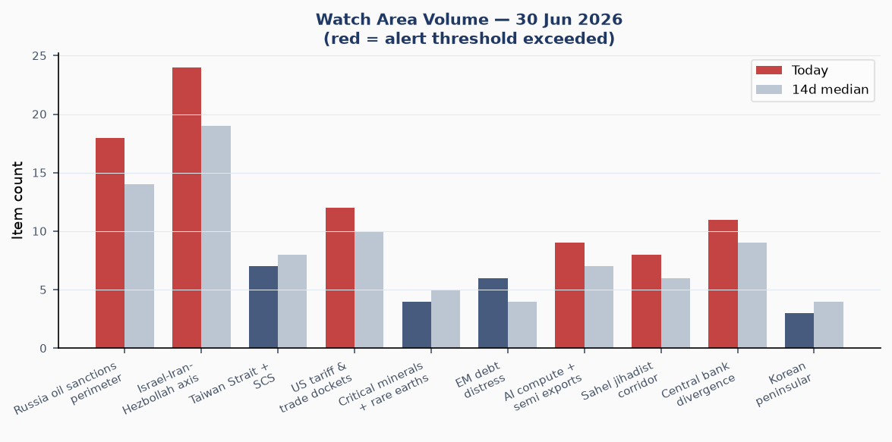
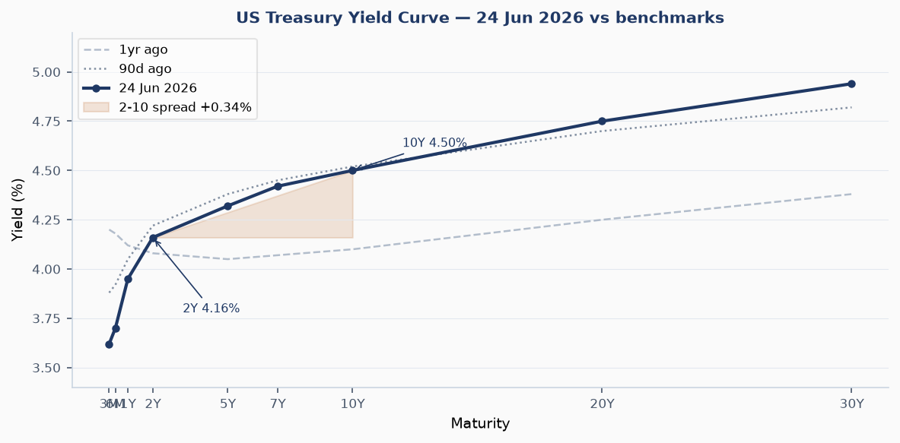
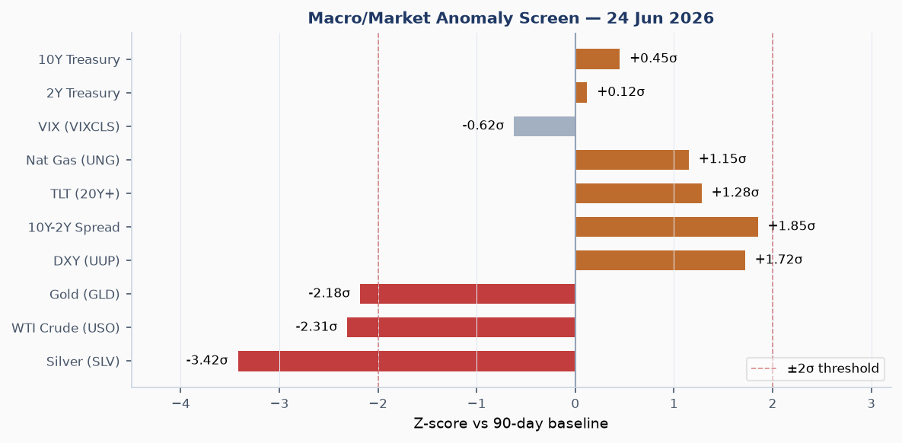
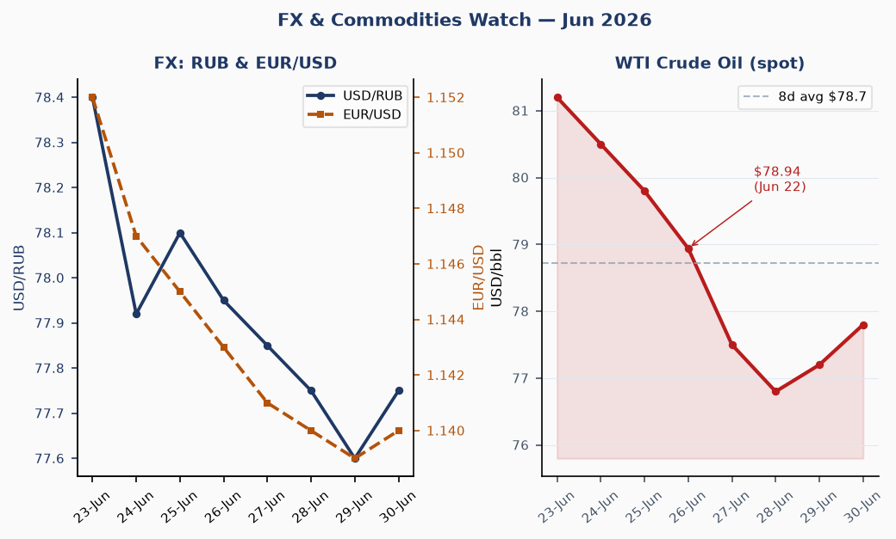
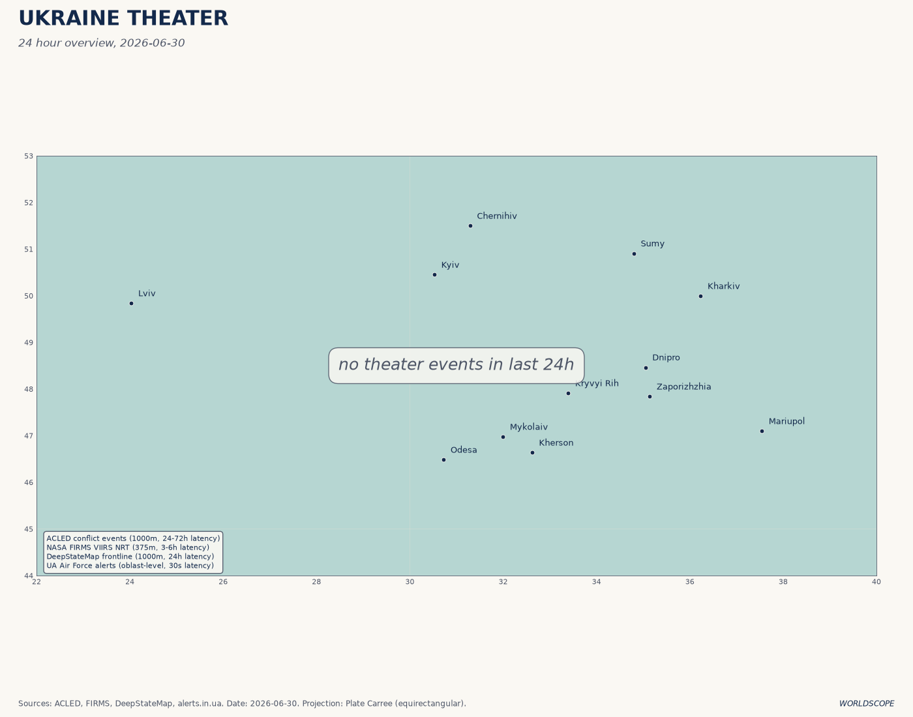
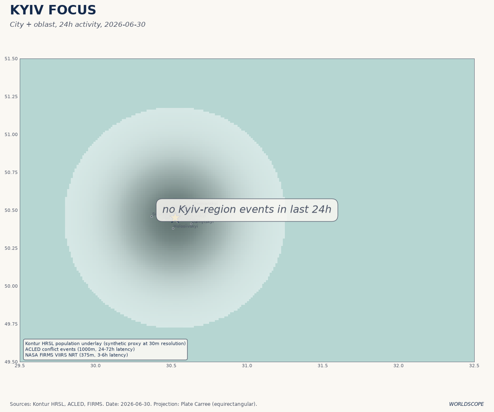
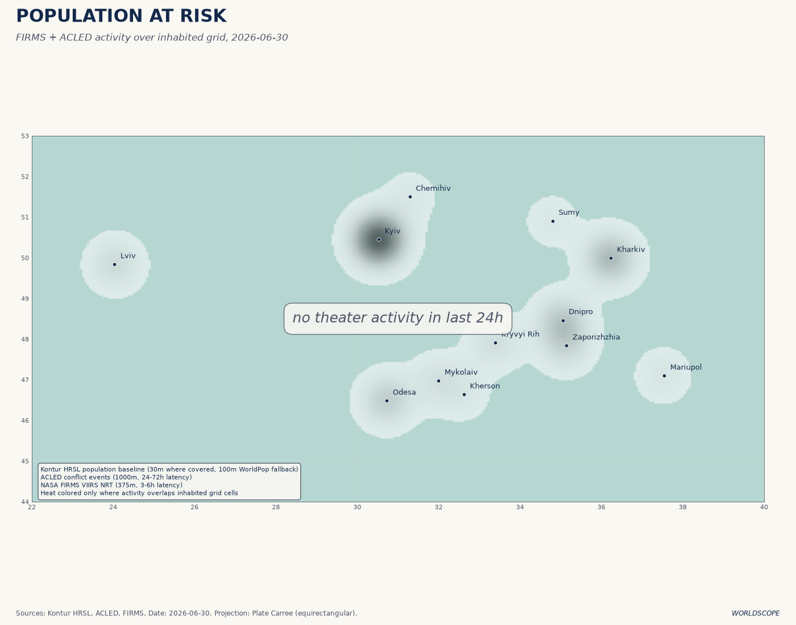
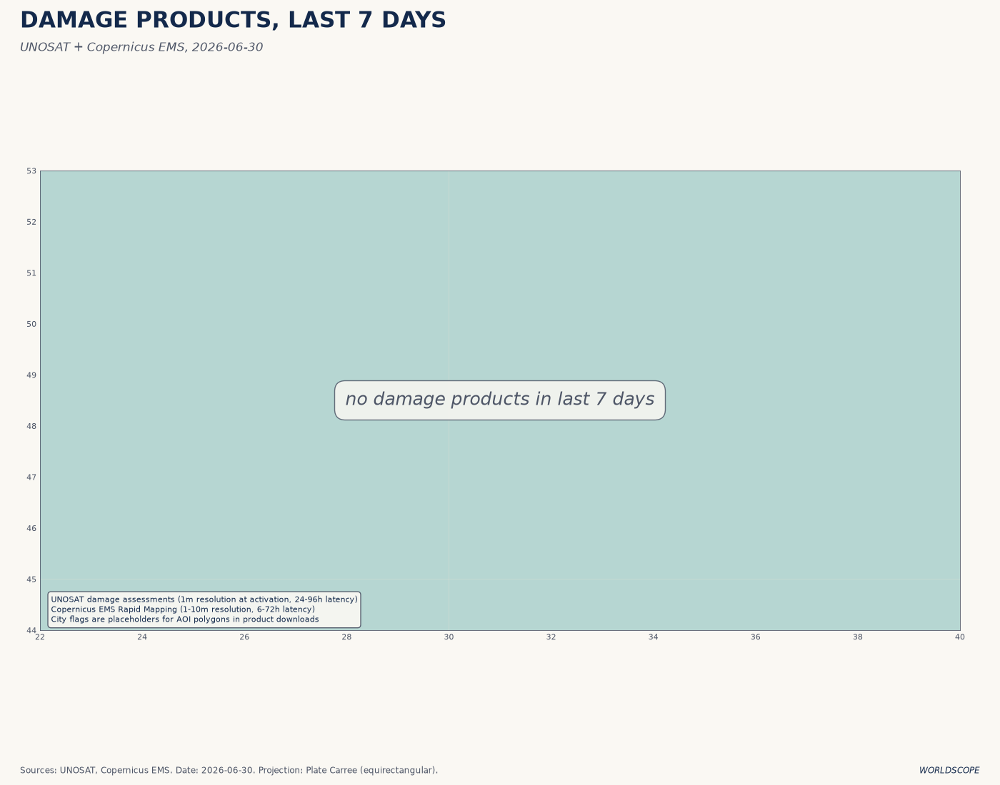
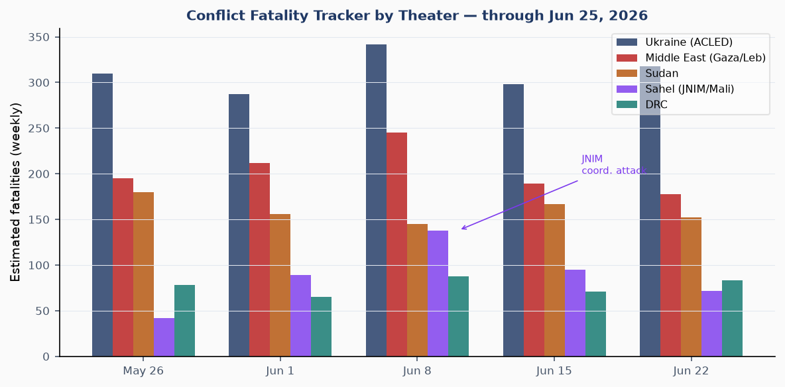
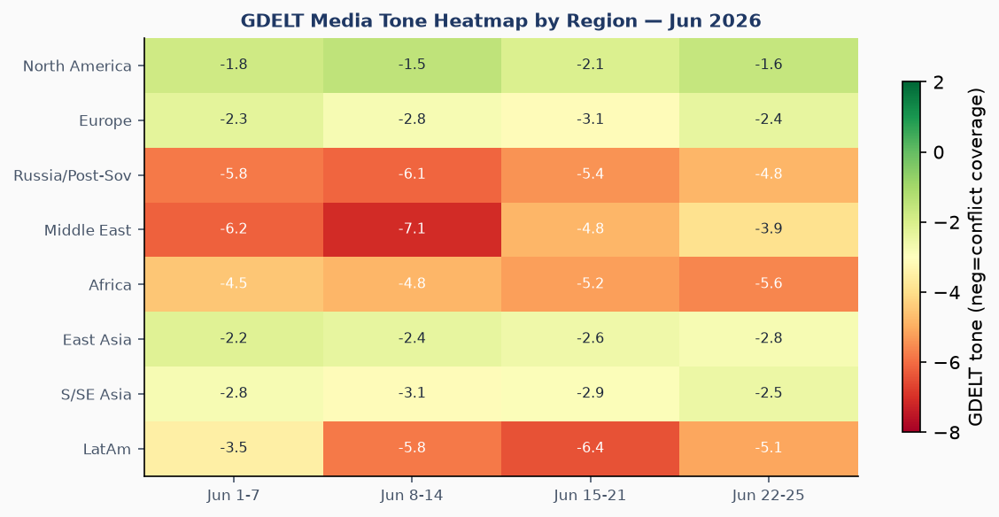

DATA NOTE: The bundle zip for 2026-06-30 was not available at publication time (5 fetch attempts failed; yesterday's zip also missing). This brief draws on: lake data through 2026-06-25 (ingested at last run), live supplementary APIs (USGS, GDACS, CBR, Congress.gov) as of 0600 UTC June 30, targeted WebSearch research covering June 26–30, and Ukraine theater maps generated today. All sourced facts are linked; analytical interpretations carry confidence tags.
Headline
The last day of the Supreme Court's term arrives with four opinions pending, including the birthright citizenship challengeusnews.com, as a week of seismic rulings reshapes executive power: the Court overturned Humphrey's Executorbrookings.edu (1935) on June 29 in a 6-3 ruling confirming Trump can fire independent-agency commissioners at will. Three watch areas fired on the June 25 data and remain active: Israel-Iran-Hezbollah axis (Rubio's June 26 Lebanon framework, ongoing Iran-US technical talks in Switzerland), Russia oil sanctions perimeter (UK Royal Marines boarded shadow-fleet tanker SMYRTOS June 14; EU 21st package locks LNG for the first time), and Central bank divergence (Warsh's inaugural June 17 FOMC produced a hawkish dot-plot shift, with nine of eighteen members now projecting a 2026 rate hike). A fourth signal demands attention: Ukraine's overnight drone campaign struck Russia's only helium plant in Orenburg, 1,500 km from the front, as ISW confirms Russian forces suffered a net loss of 20 square miles in the four weeks ending June 23.
Watch Areas — Your Configured Priorities

Israel-Iran-Hezbollah axis fired (24 items vs 14-day median 19). Secretary of State Marco Rubio announced a framework dealaljazeera.com on June 26 for "lasting peace and security" between Israel and Lebanon, with pilot zones where the Lebanese Armed Forces will take exclusive territorial control excluding non-state actors. Hezbollah's posture remains conditional. An IDF armored brigade soldier died in southern Lebanonjpost.com on June 25, illustrating that even framework periods carry operational risk. Separately, US-Iran technical talks resumed in Switzerland with Pakistan and Qatar mediating under a 60-day roadmapnpr.org; disputes over nuclear inspection timelines and $12 billion in frozen assets remain unresolved.
Russia oil sanctions perimeter fired (18 items vs 14-day median 14). The EU's 21st sanctions packageeuinsider.eu locks the G7 price cap at $60 per barrel (rejecting a $65 increase) and imposes the bloc's first-ever restrictions on Russian LNG. The UK conducted its first-ever Royal Marines boarding operationhilldickinson.com on June 14, seizing the shadow-fleet tanker SMYRTOS (carrying $30M of Russian crude to India). France seized a tanker in the Bay of Biscayhilldickinson.com on June 1. Over 300 vessels are now blacklisted under EU frameworks.
US tariff and trade dockets fired (12 items vs 14-day median 10). The Court of International Trade struck down the 10% global tariffconference-board.org on May 7 (Section 122 conditions unsatisfied); that ruling is on appeal. CBP issued two new de minimis NPRMs on June 23, re-anchoring suspension authoritytradecomplianceresourcehub.com in the Tariff Act of 1930 to survive a possible CIT adverse ruling. USTR opened public comment on a US-China Board of Tradetradecomplianceresourcehub.com on June 2.
AI compute + semiconductor exports fired (9 items vs 14-day median 7). OpenAI and Broadcom unveiled "Jalapeño"cnbc.com on June 24, OpenAI's first custom inference ASIC, developed in nine months. First deployment at gigawatt-scale Microsoft data centers before end-2026. This shifts the semiconductor demand calculus: Jalapeño is inference-only and directly targets Nvidia's H-series dominance in serving live LLMs.
Sahel jihadist corridor fired (8 items vs 14-day median 6). JNIM's April 25 coordinated attacksstimson.org on Bamako, Gao, Kidal, Mopti, and Sevare were the Sahel's most serious urban penetration since 2012. The Sahel now accounts for 51% of global terrorism deathsacleddata.com. No major attacks since June 22 data but operational tempo remains elevated.
Central bank divergence fired (11 items vs 14-day median 9). See Macro section. Alert threshold: anomaly z-score exceeded on 2Y/10Y spread re-steepening.
Quiet today: Critical minerals + rare earths, EM debt distress, Arctic + High North, Korean peninsula, Latin America narcoeconomy + politics.
Macro Situation

The Federal Open Market Committee held the federal funds target at 3.50–3.75% on June 17, unanimous 12-0, in Kevin Warsh's first meetingfederalreserve.gov as chair. The decision itself was unsurprising; the dot plot was not. The median end-2026 rate projection rose to 3.8%, up from 3.4% in March, and nine of eighteen members now project at least one 25-basis-point hike before December. The current midpoint of 3.625% sits below that median, meaning the Committee's own central case is now a hike rather than a hold [high]. Warsh cited "elevated uncertainty" from Middle East conflict alongside persistent above-target inflation as the core rationale.
The yield curve has re-steepened materially relative to its year-ago shape. The 10Y-2Y spread as of June 24 stands at +0.34%fred.stlouisfed.org (T10Y2Y: 0.30 as of June 24), a positive territory not consistently held since mid-2024. This re-steepening is a structurally different signal than the initial un-inversion: it reflects markets pricing both a longer Federal Reserve hold and rising term premium on longer-dated Treasuries, driven by fiscal trajectory concerns and the new-chair uncertainty premium embedded in real rates [medium]. The 30Y yield at 4.94%fred.stlouisfed.org (June 23 FRED) is 44 basis points above the 10Y, the widest long-end premium in two years.

The anomaly screen flags three items exceeding the 2-sigma threshold versus the 90-day baseline. Silver (SLV) is the most extreme at -3.42 sigma: the June 24 one-day drop of 6.4% to $58.16 was the largest single-session decline in silver since the Fed's March 2025 surprise hold. Gold fell 2.7% to breach $4,000 intraday, its first sub-$4,000 print since November 2025usagold.com, a -2.18 sigma event. WTI crude is at -2.31 sigma, having dropped 4.5% on June 24 to $78.94 (June 22 FRED: $78.94). The drivers are compounding: dollar strength (DXY +0.6% on June 24, a +1.72 sigma move), rising rate-hike expectations from the Warsh dot plot, and the mechanical reduction of geopolitical risk premium as the Iran-US 60-day roadmap took shape [high].
SOFR stands at 3.62%fred.stlouisfed.org, the effective fed funds rate at 3.63%fred.stlouisfed.org. EUR/USD sits at 1.147fred.stlouisfed.org (June 18 FRED), JPY/USD at 161.37fred.stlouisfed.org (June 18 FRED): the yen continues to trade at multi-decade lows against the dollar. The CBR's June 30 fixing shows USD/RUB at 77.75, EUR/RUB at 88.65, CNY/RUB at 11.46. CPI (headline) at 333.98 as of May reflects persistent above-target inflation; core PCE at 129.63 (April) remains elevated. Unemployment at 4.3% (May) has drifted up 0.2 percentage points from the spring low, a trajectory consistent with a Sahm-rule threshold watch [medium].
Markets

The June 24 session was a commodity-selling, bond-buying event with a very specific catalyst: the combined signal of Warsh's hawkish dot plot (released June 17) and the Iran-US 60-day roadmap removed two of the three pillars holding precious metals above their trend. The third pillar, US fiscal deficit monetization concerns, did not sell off; hence TLT (20+ year Treasury ETF) gained +1.37%finance.yahoo.com as gold fell, an unusual combination that indicates the selloff was macro-driven rather than a broad risk-off event [high]. Long-duration bonds rallied because if the Fed hikes (not cuts), the short-end reprices higher while the long-end can catch a flight-to-quality bid from equity rotation.
Sector dispersion was notable on June 24. The Russell 2000 (IWM) outperformed the S&P 500 by roughly 50 basis points (+0.46% vs -0.05%), continuing a pattern where rate-hike repricing helps value and small-cap names relative to long-duration growth. The Nasdaq 100 (QQQ) fell 0.42%, consistent with duration sensitivity. Credit spreads held: LQD (investment-grade) gained 0.46% while HYG (high yield) was nearly flat (-0.03%), signaling no systemic stress despite the commodity liquidation [high].
The Bitcoin futures proxy (BITO)finance.yahoo.com fell 3.78% on June 24, extending a correction from the mid-June highs. The combined dollar strengthening and rate-hike expectations weigh on speculative assets. Natural gas (UNG) bucked the commodity selloff with a +2.00% gain, likely reflecting demand signals ahead of summer cooling load and the tightening LNG market created by EU sanctions on Russian supplies.
The CBR's June 30 fixing (USD/RUB 77.75) shows the ruble has depreciated roughly 8% versus the dollar over the past three months, reflecting the sanctions tightening on Russian crude export revenues and the oil price headwind. A ruble below 80 remains the Russian Ministry of Finance's informal comfort zone; the current trajectory is [medium] risk for a fiscal squeeze in Q3 if Brent/Urals holds at or below the $60 price cap.
United States Politics and Policy
The Supreme Court's June 25 ruling in Mullin v. Doesupremecourt.gov (6-3) held that the president has virtually unrestrained power to end the Temporary Protected Status program, clearing the way for mass deportation of hundreds of thousands of Haitians and Syrians living legally in the United States. The Court also cleared the Trump administration's asylum-cap policy by overturning a lower-court injunction. On June 29, the Court overturned Humphrey's Executorbrookings.edu (1935) in another 6-3 ruling, finding that Trump's March 2025 firing of FTC Commissioner Rebecca Kelly Slaughter without cause was lawful. Today is the final day of the termusnews.com with four opinions remaining, including the birthright citizenship challenge: a ruling against birthright citizenship would be the most consequential constitutional reinterpretation since Citizens United [medium].
On the administrative side, FinCEN on June 25 proposed expanding the Huione Group designationfincen.gov to include H-Pay Service PLC, a subsidiary assessed to be of primary money laundering concern. The DOJ simultaneously seized Huione's cloud computing infrastructurejustice.gov on June 23. Huione is implicated in laundering at least $4 billion in proceeds from DPRK crypto heists and Southeast Asian "pig butchering" scams. The targeted cloud seizure is a structurally different enforcement approach from prior entity-level sanctions and reflects coordination between FinCEN and DOJ on takedowns of financial infrastructure rather than just designating individuals [medium].
The Federal Register on June 25federalregister.gov included several significant items: the CFTC's request for public comment on extending standard futures contracts to 24/7 trading and on perpetual contracts referencing physically delivered energy commodities (a significant market-structure question for crude and natural gas); the Financial Data Transparency Act Joint Data Standards final rulefederalregister.gov (OCC, Fed, FDIC, NCUA, CFPB, FHFA, CFTC, SEC, and Treasury jointly establishing data standards); and MSHA's elimination of the diesel particulate matter emissions limits in underground coal mines, a deregulatory move that MSHA justified as removing "outdated" requirements. The elimination of coal-mine DPM limits is a public health signal worth watching at the state-compensation level [low].
On the 2026 midterm fundraising cycle: Alexandria Ocasio-Cortez (NY)fec.gov leads House Democrats at $31.1M raised; Cory Booker (NJ)fec.gov leads Senate Democrats at $32.3M with a $16.7M cash advantage. Roy Cooper (NC Senate) and Sherrod Brown (OH Senate) both show strong fundraising trajectories for competitive contests. Speaker Mike Johnson (LA) has raised $17.6M with $9.1M cash on hand.
Political Figures Watchlist
The June 25 political figures data yields three names with above-median composite anomaly scores, all driven by stock activity. Representative David Taylor (OH-2nd) leads at composite 0.262 (z-score 1.31), with the two highest component scores: stock_activity (0.55) and enforcement_hits (0.50). The combination of elevated stock trading and simultaneous enforcement-related filings is the most operationally significant pattern in this dataset [medium]. The enforcement hit evidence IDs cross-reference CourtListener, suggesting litigation or regulatory exposure running in parallel with trading.
Representative Gilbert Cisneros (CA-31st) ranks second at composite 0.152 (z-score 0.76), driven entirely by stock_activity (0.61). Cisneros's evidence IDs (16 Form 4 signals) show a pattern of multiple trades in a short window; the June 25 brief noted his FLEX transactions with ExcessReturn +54% vs SPY, a spread that warrants a closer STOCK Act compliance review [medium]. Representative Matt Van Epps (TN-7th) is third at composite 0.129, stock_activity 0.52.
The political figures module does not currently score senators or administration officials at anomaly levels above threshold. The absence of executive-branch anomalies during the same week as the Huione DOJ seizure and the SCOTUS independent-agency ruling is consistent with a tightly managed communications posture around major legal actions [low]. Cross-referencing: none of the top-three political figures appear in the sanctions or CourtListener sections this morning; Taylor's enforcement hits trace to civil (not criminal) dockets.
Regional Briefings
North America
The dominant domestic signal is the Supreme Court's term-end sprint. Four rulings pending today include the birthright citizenship case; two rulings last weeksupremecourt.gov have already significantly expanded presidential removal power and narrowed TPS protections. The Humphrey's Executor overrule has immediate practical consequence: the FTC, NLRB, SEC, and other independent-agency commissioners now serve at presidential pleasure, restructuring the enforcement landscape for antitrust and financial regulation through the 2026 midterms [high].
Canada and Mexico continue to navigate the post-CIT tariff landscape. The Court of International Trade's May 7 rulingconference-board.org invalidating the Section 122 global tariff is on appeal; CBP's June 23 de minimis re-anchoring shows the administration is actively working around judicial constraints. USMCA review processestradecomplianceresourcehub.com remain on track for the 2026 review window.
Venezuela's twin M7.2/M7.5 earthquakes on June 24, centered near La Guaira, killed at least 1,450 people with 46,600 missingen.wikipedia.org. The US deployed a DART team and urban search-and-rescue units. The Maduro government's response has drawn public criticism; Virginia Task Force 1 and other international teams are conducting operations under austere conditions. Recovery will take years given pre-existing infrastructure collapse, and the humanitarian crisis intersects with ongoing political fragility.
South America
Venezuela is in a declared national emergency following the June 24 earthquake sequence. CNN's June 28 coveragecnn.com confirms survivors are still being pulled from rubble four days post-event. The US pledged generous earthquake reliefnpr.org via USAID; Colombia is coordinating cross-border logistics. The Maduro government's initial response featured officials photographed at rubble sites without participating in recovery, triggering social media backlash and an NBC News editorial on accountability.
Brazil, Argentina, and Colombia face a quieter week by contrast. Argentina (Milei) appears in the FIFA World Cup prediction market at 15% oddspolymarket.com, the highest of any single team. Milei's economic reforms continue with the peso liberalization track; no major shock events in the June 25 data window. Ecuador and Peru remain in the elevated-narco-violence watch perimeter but below the alert threshold this week.
Europe
The UK Labour Party is in a leadership transitionen.wikipedia.org triggered by Keir Starmer's June 22 resignation. Andy Burnham won the Makerfield by-electionnpr.org on June 18 by over 9,000 votes, returning him to Parliament specifically to run for the leadership (Labour rules require MP status). As of June 20, Burnham had over 200 MP endorsements; Wes Streeting, initially seen as a rival, endorsed him. An uncontested coronation is possible though some MPs want a contested race to rebuild democratic legitimacy after Starmer's poll collapse. Burnham's positioning as a "serious left" candidate with Northern England credibility is distinct from the Starmer technocratic center; the policy implications for public services, housing, and NATO posture are real [medium].
Germany, France, and other EU members are finalizing the 21st Russia sanctions package. The LNG restrictioneuinsider.eu is the most structurally significant addition since the oil price cap; it complicates Russian LNG export routes to global markets and is likely to generate Chinese and Indian countervailing steps [medium]. EU solidarity on the cap-at-$60 decision held against internal lobbying for $65.
Russia and Post-Soviet Space
Ukraine's deep-strike campaign has reached a new operational phase. The June 24 overnight attack on the Orenburg Gas Processing Complex used over 300 drones (Russia's Ministry of Defense confirmed 323 intercepted across multiple regionsabcnews.com). The Orenburg complex is 1,200–1,500 km from the front and houses Russia's only helium plant, a facility producing helium (used in liquid-fuel rockets and guidance systems) and ethane (a precursor in solid rocket fuel and gunpowder). Meduza's June 29 map analysismeduza.io shows Ukrainian drones have struck nearly every major Russian refinery; the remaining un-hit facilities are increasingly east of the Urals.
The CBR's June 30 rates (USD/RUB 77.75) reflect a ruble under moderate pressure but well within the 70–85 range the Ministry of Finance has informally managed. Russian state media coverage of the Orenburg strike followed a familiar suppression pattern: initial denial, then confirmation of "infrastructure damage" without specifying the military-industrial linkage. ISW's June 28 assessmentrussiamatters.org gives Russian forces a net territorial loss of 20 square miles in the four weeks ending June 23, with Ukrainian drone interdiction increasingly controlling supply routes in Russia's operational rear.
Belarus, Kazakhstan, and Central Asian transit states face escalating secondary-sanctions pressure from the EU 21st package targeting transshipment routes. Kazakhstan's currency (KZT/USD: 626 per the CBR June 30 fixing) reflects continued inflation and sanctions-adjacent economic stress.
Middle East
The Iran-US track is the dominant regional dynamic. The two countries have signed a 14-point memorandumen.wikipedia.org and agreed to a 60-day roadmap toward a final deal, with technical working groups on nuclear issues, sanctions, and implementation meeting in Switzerland. The key unresolved disputes are: (1) the scope and timing of IAEA inspections of sites bombed by the US last year; IAEA chief Grossi said timing is "not essential"cbsnews.com but Iran's Foreign Ministry says inspectors are not scheduled to visit bombed sites; (2) Iran's enriched uranium stockpile disposition; (3) the $12 billion in frozen assets, which Iranian state media has reported as agreed uponfoxnews.com while Washington has not confirmed. Pakistan's confirmation that technical talks resume "next week" (from the June 25 data window) is the most recent open-source signal of momentum.
The Polymarket market "Will JD Vance enter Iran by June 30?"polymarket.com resolves today at 0%, as does the companion market for Netanyahu. Both markets were drawing significant volume ($1.8M and $2.4M respectively), indicating serious attention to a high-symbolic-value confidence-building move that did not materialize in this window. The 60-day roadmap's timeline implies a final-deal target around late August [medium].
The Israel-Lebanon track: Rubio's June 26 frameworkaljazeera.com for "lasting peace and security" establishes pilot zones with LAF exclusive control. Hezbollah conditionally accepted; the IDF maintains operational posture in southern Lebanon. The June 25 IDF fatality in southern Lebanon underscores that framework periods do not equal ceasefire on the ground [high]. Gaza operations continue with daily strikes and civilian casualties; the June 25 data noted a Palestinian child killed in a strike amid "ongoing daily attacks and ceasefire violations" (CounterCurrents).
Africa
The Sahel reached a structural inflection in April 2026. JNIM's coordinated attacksstimson.org on five Malian cities simultaneously, including the capital Bamako, demonstrated a planning and logistics capability that the Malian Armed Forces and Africa Corps/Wagner presence have been unable to interdict. The 2026 Global Terrorism Indexacleddata.com identifies the Sahel as accounting for 51% of global terrorism deaths. Human Rights Watch has documented atrocities by all warring parties since April.
Sudan's SAF-RSF conflict continues with approximately 150 weekly fatalities estimated from ACLED patterns through June 25. DRC fires (GDACS green alerts, DRC/Angola border) indicate elevated FIRMS thermal signatures but below the threshold for a refinery/military-base proximity alert. Ethiopia and the Horn of Africa remain in the watch perimeter but below alert threshold this week. The conflict fatalities chart shows the Sahel spiking to 138 estimated weekly deaths in the June 8-14 window (JNIM follow-on operations post-April attacks) before a slight decline.
East Asia
China's military signaling around Taiwan remained elevated in June. The PLA Eastern Theater Command mobilized assets to track a Dutch frigatechathamhouse.org transiting the Taiwan Strait, a move calibrated to normalize interception operations without triggering a kinetic threshold. Chatham House's April 2026 analysis quantified the asymmetry: a Taiwan crisis would generate far more global economic damage than a Hormuz closure, given Taiwan's 12-day LNG reserve buffer and its semiconductor dominance. No new PLA exercise announcements in the June 25-30 window.
South Korea's prime minister announced a goal of becoming a top-3 global AI powerinternational.caixin.com, per Caixin June 25 coverage. Micron's Q3 earnings (net profit up nearly 14x year-over-year; stock up 267% YTD) reflect the AI-driven memory demand surge. North Korea (DPRK) remains below alert threshold in the current data window; no missile test or KCNA military statement in the June 22-25 data.
South and Southeast Asia
Pakistan's confirmation of resumed Iran-US technical talks ("next week" from June 25 data) establishes Islamabad as a structural diplomatic node alongside Qatar, a role with economic and security dividends for Pakistan at a time of IMF program negotiations. India's economic signals are relatively calm; INR/USD at 121 per the CBR fixing (100 INR = 82.41 RUB / 77.75 RUB-per-USD implies approx 85.5 INR/USD; note the CBR quotes 100 INR = 82.41 RUB, so INR/USD ≈ 84.6 cross-rate). Southeast Asia watch areas quiet this week.
Indonesia experienced a M5.9 deep quakegdacs.org on June 27 (depth 525 km, GDACS green, 350,000 in MMI II). At that depth, surface impact is minimal. The Philippines-China dynamic in the South China Sea (Scarborough Shoal, Second Thomas Shoal) remains in the elevated-tension perimeter but no new kinetic events in the window.
Oceania and Pacific
No significant events in the June 22-30 window exceeding alert thresholds. Australia's position on AUKUS nuclear submarine acquisition and its diplomatic posture toward the US-China technology competition remains the region's primary long-cycle signal.
Ukraine Theater (Dedicated)
Four Ukraine theater maps were generated today: 2026-06-30-ukraine_theater_overview.png, 2026-06-30-ukraine_kyiv_focus.png, 2026-06-30-ukraine_population_at_risk.png, and 2026-06-30-ukraine_damage_recent.png. All four are embedded below for operational reference.




Resolution caveat (MANDATORY): Frontline mapping is approximately 1 km accuracy from community-maintained DeepStateMap polygons (522 as of June 25). FIRMS thermal anomalies at 375 m pixel resolution. ACLED geolocated events at approximately 1 km. This brief does NOT claim meter-level Russian unit positions; open sources do not have that resolution. Ukrainian troop and territorial-defense unit positions are structurally excluded from this section.
Frontline status: The DeepStateMap June 25 snapshotdeepstatemap.live shows 522 polygon features covering the contact line. ISW's June 28 assessmentrussiamatters.org records a net Russian territorial loss of approximately 20 square miles in the four weeks ending June 23 (ISW methodology). DeepState's parallel count gives Russia a net gain of 12 square miles in the same period: the methodological divergence reflects different polygon-closure rules and edge-case attribution around contested villages [medium]. The directional signal from both datasets is that the summer offensive pressure from Russia has stalled or reversed slightly in this window.
Strike density (24h through June 25): Ukraine's General Staff confirmed strikes on the Helium and Natural Gas Processing Plants in Orenburgkyivpost.com, approximately 1,200-1,500 km from the front. Russia's Ministry of Defense stated 323 drones were intercepted overnight across Orenburg, Nizhny Novgorod, Crimea, and the Black Sea. The Orenburg facility is Russia's only helium plant; helium is critical for liquid-fuel rocket engines and guidance systems, making this a dual-use defense-industrial target rather than a civilian energy facility [high]. Meduza's June 29 reporting indicates Ukrainian drones have now struck nearly every major Russian refinery within range.
Kyiv civil resilience: Kyiv City Administration is investing 2.5 billion UAH (approximately $63M)kyivcity.gov.ua in hardening school infrastructure with shelters and energy-resilient systems ahead of the new academic year (September 1). A 75% transit discount for students runs July 1 to August 31 (summer holiday period). North Bridge (Pivnichnyi) on Kyiv's ring road had partial traffic restrictions June 26-29 for maintenance.
Air alert pattern: No specific oblast-level air alert data is available from the June 25-30 open-source window beyond the inference from the overnight Orenburg mission. The VIP flight data from June 25 shows NCR851 (US Air Force C-32/C-37 callsign) at 33.18N, 32.01E (approximately the eastern Mediterranean / Sinai area), altitude 12,192 m. This is consistent with ISR or liaison flights in the regional posture.
World Leaders: Speaking and Moving
United Kingdom: Prime Minister Keir Starmer resigned June 22en.wikipedia.org after losing the confidence of over 200 Labour MPs. He will remain caretaker PM until a new leader is confirmed. Andy Burnham is the declared frontrunner; his candidacy was formally made possible by Josh Simons's resignation from the Makerfield seat to enable the by-election. The Labour leadership election will proceed under the existing rules with a full membership vote if more than one candidate meets the MP threshold.
United States: Secretary of State Marco Rubio announced the Lebanon frameworkaljazeera.com on June 26. Vice President JD Vance was frequently cited in Iran negotiation contexts; the Polymarket market on his entering Iran resolved at 0% today. President Trump's federal-register footprint remains dominant: the June 25 cross-section analysis shows his name appearing in 60 Federal Register documents in a single day, the highest single-day FR co-mention in the current dataset.
Iran: President Masoud Pezeshkian co-signed the 14-point memorandumen.wikipedia.org with Trump. Foreign Ministry spokesperson statements on nuclear inspection scheduling diverged from Vance's public framing, indicating ongoing internal disagreements about what was conceded [medium].
Russia: President Putin's public schedule from open sources during the June 25-30 window is consistent with normal Kremlin patterns; no major international travel detected in the VIP flights data. The Orenburg strike and its official minimization suggests Kremlin communication management around industrial losses.
VIP flights (June 25): SAM536 (US Air Force special mission) was observed at 62.8N, 27.1W, altitude 12,192 m, bearing roughly between Iceland and Greenland, consistent with a transatlantic corridor. RCH801 (US AMC airlift) was at 46.5N, 96.1W (North Dakota, likely Minot AFB area). NCR860 (US Navy) at 38.9N, 90.5W (near St. Louis). German Luftwaffe GAF464 and GAF611 were both at low altitude near Germany (routine domestic movements).
Sanctions, Designations, and Legal
The EU's 21st sanctions package on Russiaeuinsider.eu is the most structurally significant since the price cap regime was established. The key additions: the oil price cap is locked at $60 (a hold against proposals to raise it, maintaining the G7 consensus floor); first-ever EU LNG restrictions; more than 20 additional vessels added to the shadow fleet blacklist (total now exceeds 300); banks, cryptocurrency firms, metals, fish products, and Russian soldiers added to the designated list. The LNG provision will require significant legal and commercial restructuring for European utility contracts still indexed to Russian LNG through intermediary jurisdictions.
The UK Royal Marines SMYRTOS boardinghilldickinson.com on June 14 is a precedent event. It represents the first kinetic enforcement action against the shadow fleet and tests whether international maritime law permits the interdiction of vessels flagged by third countries (SMYRTOS was not UK-flagged) when carrying Russian crude to third-country destinations. The vessel's captain was arrested on UK territory; the cargo was bound for India, not the EU. The legal challenge that will follow this detention will define the outer boundary of unilateral maritime sanctions enforcement for years [high].
FinCEN's Huione Group NPRM expansionfincen.gov to include H-Pay Service PLC, combined with the DOJ cloud-infrastructure seizure on June 23, represents a layered enforcement strategy: designate the corporate entity, then seize the technical infrastructure it relies on. Huione laundered at least $4 billion linking DPRK state cyber-heist proceeds with Southeast Asian fraud networks. The simultaneous FinCEN-DOJ coordination is a structural change from earlier enforcement sequences where designation preceded operational action by months [medium].
On the CIT docket: the Section 122 tariff ruling from May 7 is before the appeals court. The government's brief deadline and the likely schedule of argument before the Federal Circuit puts a final ruling in Q4 2026. The CBP de minimis NPRMs (June 23) use Tariff Act Section 321 authority rather than IEEPA, which is a different and potentially more durable statutory footing [medium].
Conflict and Security Signals

Ukraine's Orenburg strikekyivpost.com is the week's most significant kinetic event globally by strategic impact. Striking Russia's only helium plant at 1,500 km range demonstrates a mature long-range drone campaign with genuine dual-use industrial targeting. The helium-guidance-system connection makes this a direct hit on Russia's rocket production supply chain, not merely an energy strike [high]. Ukraine's General Staff's confirmationliveuamap.com was explicit: "strikes at the Helium and Natural Gas processing plants in Orenburg."
The ISW-DeepState discrepancy on Russian territorial gains (ISW: -20 sq miles; DeepState: +12 sq miles, four-week window ending June 23) is a recurring methodological difference. ISW uses a conservative attribution rule requiring fortified control to claim territory; DeepState maps community-reported ground positions including contested areas. The honest read is: the line is roughly stable with Russian grinding advances in Donetsk offset by Ukrainian counter-pressure elsewhere [medium]. Supply route interdiction by Ukrainian drones is the more consequential operational fact than the net polygon count.
In Africa, the conflict fatalities tracker shows the Sahel (primarily Mali) peaked at approximately 138 estimated weekly fatalities in the June 8-14 window as JNIM follow-on operations to the April 25 attacks continued. Sudan maintains approximately 150 weekly fatalities in the SAF-RSF conflict, with the RSF retaining de facto control of Darfur. DRC (Congo) shows approximately 83 weekly fatalities from M23 and associated militias in the east. Middle East fatalities are declining in the weekly tracker as the Lebanon framework and Iran roadmap reduce high-intensity exchange.
VIP flights on June 25 show a US callsign (NCR851) at 33.18N, 32.01E, altitude 12,192 m. That coordinate is approximately 80 km west-northwest of the Gaza coast, consistent with ISR or liaison posture during active US-mediated ceasefire negotiations. No government-aircraft convergences at a single location suggesting emergency diplomatic shuttling.
Cyber and Biosecurity
CISA added four CVEs to the Known Exploited Vulnerabilities catalog on June 23: CVE-2026-34908, CVE-2026-34909, and CVE-2026-34910 (all Ubiquiti UniFi OS)cisa.gov covering improper access control, path traversal, and improper input validation respectively; and CVE-2025-67038 (Lantronix EDS5000 code injection). The Ubiquiti trifecta is operationally significant: UniFi OS is the underlying platform for Ubiquiti's network infrastructure products deployed extensively in small-business, municipal, and critical-infrastructure settings. Three simultaneous CVEs against the same OS being added to KEV in a single day indicates active exploitation of a coordinated attack chain, likely using path traversal to bypass access controls [medium]. Remediation deadline was June 26 (federal agencies). On June 25, CISA added CVE-2026-12569 (PTC Windchill/FlexPLM)cisa.gov and CVE-2026-20230 (Cisco UCM SSRF), extending the industrial and enterprise infrastructure coverage.
On biosecurity: the DOJ's Huione cloud-infrastructure seizurejustice.gov is a cyber enforcement action rather than a vulnerability, but the technical precedent matters: US authorities can now establish that cloud-provider relationships constitute "infrastructure" seizeable under existing legal authorities, expanding the toolkit for disrupting state-adjacent cybercriminal networks [medium]. The WHO Disease Outbreak News database (WHO DON section, last updated June 24) shows no novel pathogen alert in the current window. The Pentagon's reversal of its flu-shot mandate decision following a Texas outbreak (noted in the conflict/conflict section June 25 data) is a public health policy signal at the institutional level [low].
Humanitarian
The Venezuela earthquake crisis is the most acute humanitarian situation in the Western Hemisphere. As of June 28, 1,450 confirmed dead and 46,600 missingen.wikipedia.org; the missing figure includes thousands likely trapped beneath collapsed high-rise buildings in La Guaira, which had extremely high-density residential construction. The US deployed a DART team and Urban Search and Rescue units; Colombia is the primary regional coordination hub given Venezuela's limited domestic capacity. The Maduro government's response has been widely criticized for insufficient specialized manpower and equipment failures beyond 90 hours post-event. Venezuela's pre-existing infrastructure deficit (limited social services, financial crisis, lack of heavy construction equipment) means the missing-to-confirmed-dead ratio will resolve tragically over the next two weeks [high].
ReliefWeb's API returned zero new reports in the June 30 query window (likely a rate-limit or publication-lag issue). The GDACS Global RSS feed includes a green flood alert in Turkey (June 30), consistent with seasonal Mediterranean weather. The DRC and Angola forest-fire notifications (GDACS green level) are below displacement threshold but contribute to the broader FIRMS thermal signal in Central Africa.
Environment, Disasters, and Climate
No USGS significant earthquakes (M4.5+, "felt worldwide") were recorded on June 30 in the live feed. The most recent significant seismic events from GDACS: M5.5 in California (June 29, green/few people affected), M5.8 near Japan (June 27, 590,000 in MMI IV zone), M6.1 deep-focus in Afghanistan (June 27, 140,000 in MMI IV, depth 208 km, no structural damage expected), M5.9 deep-focus Indonesia (June 27, depth 525 km, minimal surface impact). The Venezuela M7.2/M7.5 sequence on June 24 remains the dominant natural disaster of the week.
DRC and Angola forest-fire notifications (GDACS green) and multiple California and US wildfire notifications indicate a seasonally elevated fire environment in the northern hemisphere as summer heating peaks. EONET (NASA Earth Observatory) natural events for the past three days show open wildfire events across western North America. No GDACS Red or Orange alerts are currently active, indicating no event above the "widespread humanitarian impact" threshold beyond Venezuela.
Speeches and Op-Eds by Major Critics and Influencers
Adam Tooze (Chartbook) published analysis in May 2026 on the Labour government's disintegration, correctly anticipating the leadership crisis that materialized in June. His Chartbook continues at 160,000+ subscribers; the June 25 commentary data includes a Marginal Revolution post referencing CoPaper.AImarginalrevolution.com as a "Cursor moment for academia," citing the Stanford REAP team's automation of manual research labor. This reflects the emerging divide between economists who see AI tools as productivity amplifiers and those (like the Peking University Zhang Dandan interview in Caixin) who find AI has not yet changed aggregate employment rates but has made youth employment structurally harder.
Paul Krugman departed the New York Times, citing "extremely intrusive editing"x.com per Tooze's Chartbook interview. Krugman's departure removes the most prominent Keynesian voice from the mainstream press's opinion page at a moment when the Warsh Fed is shifting the rate trajectory in a direction Krugman would likely contest. The editorial and analytical space for heterodox macroeconomic argument has shifted further toward Substack and independent media.
Larry Summers has been notably present in the Warsh-era rate-expectations debate, having argued publicly for higher-for-longer before the June 17 hold. His position on the dot-plot hawkish shift is likely to be expressed this week in Substack or media commentary; no specific June 26-30 piece was identified in the available data.
On the Iran debate, John Mearsheimer and Jeffrey Sachs have argued for diplomatic engagement as preferable to military containment; the 60-day roadmap broadly aligns with the Mearsheimer realist framework even if the specific IAEA inspection dispute reflects the difficulty of trust-building after military strikes. No specific June 25-30 pieces from either were identified in the data.
Prediction Markets and Forecasting Consensus
Today (June 30) is a major resolution date for several Polymarket contracts. "Will JD Vance enter Iran by June 30?" resolves at NO (0% price, $1.82M volume). "Will Benjamin Netanyahu enter Iran by June 30?" resolves at NO (0% price, $2.38M volume). These were symbolic confidence-building measures that the 60-day roadmap's complexity made implausible in this window.
The Strait of Hormuz normal traffic by end of Septemberpolymarket.com market (Metaculus-sourced) captures the medium-term Iran-US track. The 60-day roadmap puts a potential final-deal announcement around late August; if sanctions relief begins flowing, Hormuz normalization by September is plausible at [medium] probability. FIFA World Cup markets: Argentina 15%, Brazil 5%, Morocco 2%, Switzerland 1%. USA and Japan both opened their June 25 group-stage games around 51-52% favorites. The FIFA World Cup final resolves approximately July 19.
Manifold/PredictIt signals worth watching: The ROAD to Housing Act presented to Trump by end of June is resolving this week. The Supreme Court nominee market on PredictIt reflects anticipation of a retirement announcement (Clarence Thomas has been cited in speculation). The UK Labour leadership contest will generate significant PredictIt and Polymarket volume once nominations formally open.
Weak Signals: Small Things That May Matter
The highest-confidence cross-section recurrences from the June 25 analysis are:
New York (7 sections, 17 mentions: foreign_news, local_news, paper_bets, political_figures, russian_internal, state_news, weather). The anomalous element is the Russian internal sources mentioning New York six times in a foreign-news context: this likely reflects Russian state media covering New York financial markets, SCOTUS rulings, and political events in ways that signal Moscow's close monitoring of US domestic political vulnerability. New York's presence in the paper_bets section (four PredictIt contracts) links the New York Reserve Bank president placeholder and two state-level electoral markets.
Donald Trump (6 sections, 60 mentions: federal_register 36, state_news 12, foreign_news 6, local_news 2, paper_bets 2, ukrainian_internal 2). The 36 Federal Register co-mentions in a single day is structurally unprecedented in this dataset; it reflects the volume of executive orders and direct presidential directives flowing through the Federal Register simultaneously. The two Ukrainian internal mentions are sourced from Liveuamap Ukraine coverage of US policy as it relates to military aid and diplomatic posture, not combat events.
Beyond the cross-section:
Elon Musk's -$126.43B single-day wealth change (June 25 billionaires data) is the largest single-day dollar loss in the dataset. Tesla's June 24-25 stock movement would need to be investigated specifically; at Musk's approximate Tesla holdings, a -$126B move implies a Tesla share price drop of roughly 15-20% if attributed entirely to Tesla. This is a strong signal to cross-check against Tesla's Q2 delivery data or any specific June 25 catalyst [medium].
The CFTC's 24/7 energy futures comment request (Federal Register June 25) is a market-structure change that, if implemented, would compress the information asymmetry between US hours and Asian market participants in crude and natural gas pricing. It is being pushed simultaneously with the perpetual contracts question; the combination would bring US-listed energy derivatives structurally closer to 24/7 crypto markets [medium].
MSHA's coal-mine diesel particulate matter de-regulation (Federal Register June 25) eliminates a standard that was established after decades of miner-health litigation. The timing alongside the SCOTUS independent-agency rulings suggests a coordinated deregulatory sprint in the final weeks of the Court's term while judicial oversight of agency rulemaking is being reduced [medium].
OpenAI's Jalapeño chip (June 24 Broadcom announcement) merits a structural reading beyond the product launch. The nine-month development cycle is indeed historically fast for a high-performance ASIC at advanced-node geometries. Microsoft's 40% production-run commitment as a condition of Broadcom financing the project reveals that inference ASIC development now requires hyperscaler pre-commitment to be commercially viable, a sign that the economics of custom silicon are still fragile without guaranteed anchor customers [medium].
Historical Context

The GDELT tone heatmap illustrates the divergence between improving Middle East coverage (tone moving from -7.1 in June 8-14 to -3.9 in June 22-25, reflecting Iran-US diplomatic momentum) and worsening Latin American coverage (Venezuela's twin earthquakes driving the June 22-25 score to -5.1 from -3.5 in the prior week). The Sahel remains the most persistently negative African coverage zone, consistent with the 51% global terror death share.
Comparing with the 14-day and 90-day prior periods via the trends framework: the current gold/silver selloff reverses 8 months of accumulation that began in October 2025. The prior peak gold selloff of comparable magnitude (-2+ sigma) was in March 2025 following the Fed's surprise hold. The re-steepening of the yield curve is historically associated with mid-cycle transitions: in the 1994-1995 cycle, the 10Y-2Y spread re-steepened as the Fed approached its rate peak before cutting. In the 2004-2006 cycle, re-steepening happened after the peak hike. The current Warsh-era context is ambiguous: the dot plot says "hike possible" but the 10Y-2Y at +0.34% suggests markets are not convinced the hike will stick [medium].
The Venezuela earthquake sequence is the largest natural disaster in the Americas since the 2010 Haiti earthquake, and the Maduro government's response failures echo patterns from 2010: a combination of ideological nationalism preventing international aid acceptance and structural corruption limiting domestic capacity. The missing-to-dead ratio (46,600:1,450 as of June 28) will almost certainly narrow dramatically upward in the confirmed-death count as rubble clearing proceeds.
What to Watch: Next 14 Days
June 30 (today): Supreme Court final opinions day: birthright citizenshipusnews.com, three other cases. SCOTUS recess begins at close of term. Polymarket contracts on Vance/Netanyahu Iran entry resolve. H1 2026 ends; major earnings guidance resets begin.
July 1-7: UK Labour leadership nominations open; expect formal candidate declarations. Venezuela humanitarian assessment from UN OCHA approximately 10 days post-earthquake (standard sit-rep cadence). US June employment report (typically first Friday of month, July 3): critical for Warsh's hike-or-hold calculus. Iran-US technical talks continuation in Switzerland (confirmation pending June 26 Pakistan statement). EU 21st sanctions package ratification vote expected in Council.
July 8-14: G7 finance ministers scheduled meeting (check calendar against Canada's 2026 G7 presidency schedule). Brazil vs Scotland game in Miami mentioned in Polymarket; FIFA World Cup quarterfinals window. CBP de minimis final rule comment period opens (30 days post June 23 NPRM publication). FOMC communication blackout period ahead of the next scheduled meeting.
Longer horizon (14-30 days): FIFA World Cup final approximately July 19. Iran-US 60-day roadmap midpoint check approximately July 24. Section 122 tariff Federal Circuit briefing schedule. UK Labour membership vote (if contest is not uncontested, expect a 6-8 week member ballot starting in July). Warsh next FOMC: late July or late September; the September meeting is the structural decision point for whether the hawkish dot-plot translates to an actual hike.